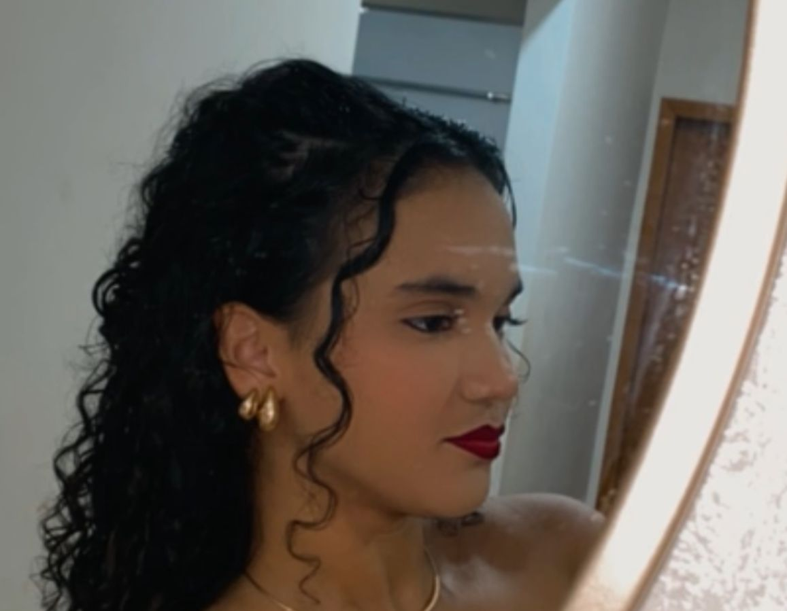
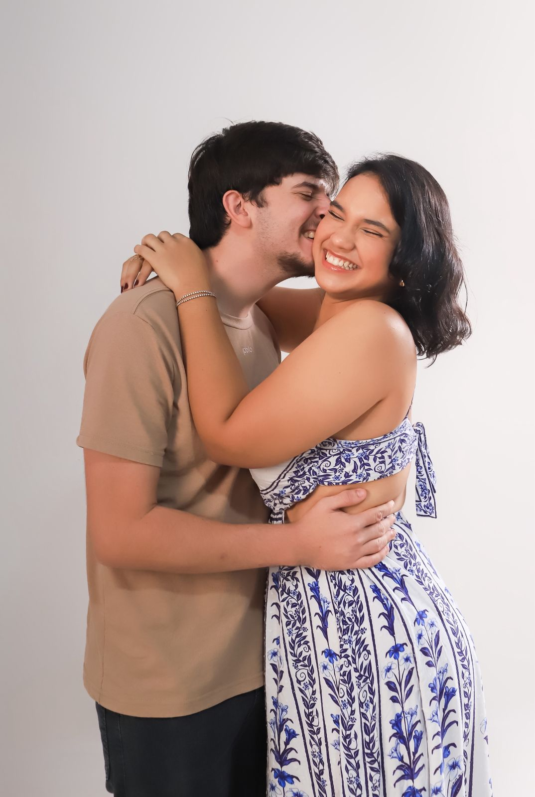

Quem é ela?
Ela é daquelas pessoas que não passam despercebidas, não necessariamente pelo barulho, mas pela presença. Existe algo na forma como ela observa o mundo que chama atenção. Antes de falar, ela escuta. Antes de agir, ela pensa. E quando decide fazer algo, faz com intenção.
Desde cedo, ela demonstrou curiosidade genuína. Não apenas curiosidade superficial, mas aquela vontade de entender como as coisas funcionam. Sempre buscando enxergar além do óbvio e aprender cada vez mais.
Ao longo da sua trajetória, enfrentou desafios que a obrigaram a amadurecer. Houve momentos de dúvida e insegurança, mas cada obstáculo trouxe aprendizado e crescimento.
Ela valoriza princípios. Honestidade, lealdade e responsabilidade não são apenas palavras bonitas, são pilares. Prefere conversas significativas a interações vazias.

Outro ponto marcante é sua determinação. Quando estabelece um objetivo, dificilmente desiste. Ajusta rotas, aprende novas habilidades, mas não abandona o que é importante.

No campo profissional ou acadêmico, ela se destaca pela
organização e comprometimento.
Está sempre buscando evolução e melhoria contínua.
Aliás, eu conheci ela no
serviço dela
.
Apesar de toda essa força, também é sensível. Aprendeu a importância de estabelecer limites saudáveis e cuidar da saúde emocional.
Ela acredita em evolução constante. Aprende com livros, experiências e até mesmo com os próprios erros.
Seus sonhos são grandes, mas seus passos são conscientes. Move-se com estratégia e propósito.
Este site nasce como uma forma de apresentar sua história, valores e projetos. Em breve, você poderá ver mais na seção "Mais dela".